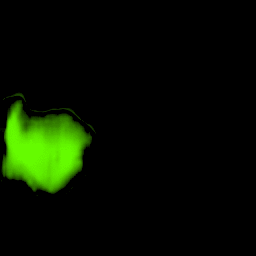

Learning Instance Activation Maps for Weakly Supervised Instance Segmentation
Visualization
• Filling process
Our model collects pseudo ground-truth masks from noisy segment proposals and learns to fill object extent. The filling process is performed in a convolutional manner to facilitate Cuda acceleration.

• Generalize to video segmentation
The extent filling module learns class-agnostic object commonality; thus the model trained on VOC2012 could be directly applied on general segmentation tasks such as video segmentation and saliency detection.


• Generalize to saliency detection
• Instance segmentation results
Reference
@article{Zhu2019IAM,
title={{Learning Instance Activation Maps for Weakly Supervised Instance Segmentation}},
author={Zhu, Y. and Zhou, Y. and Xu, H. and Ye, Q. and Doermann, D. and Jiao, J.},
journal={CVPR},
year={2019}
}